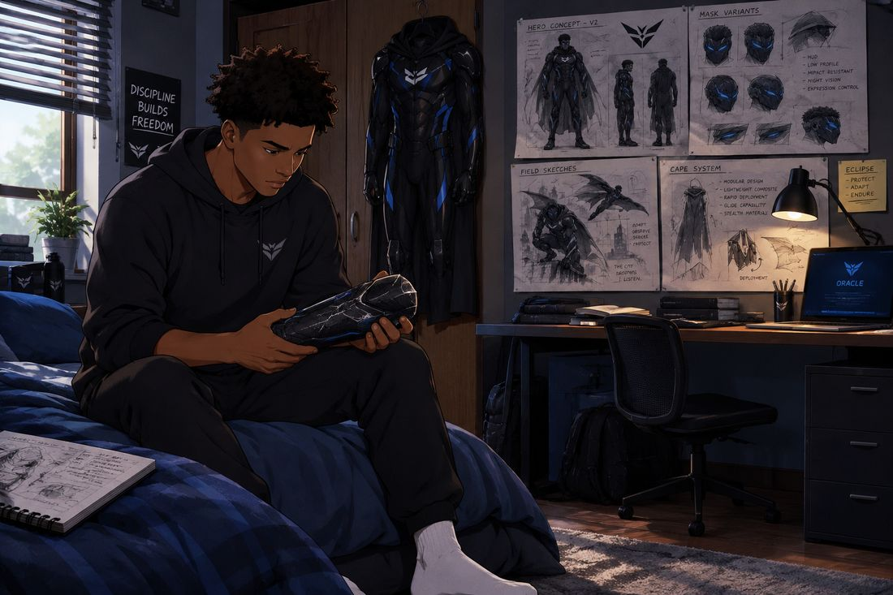
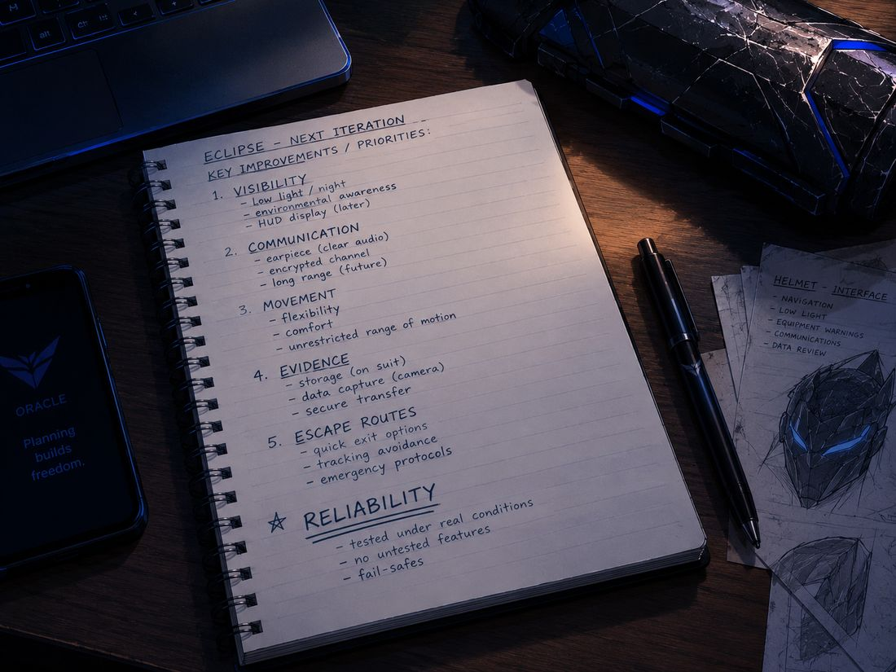
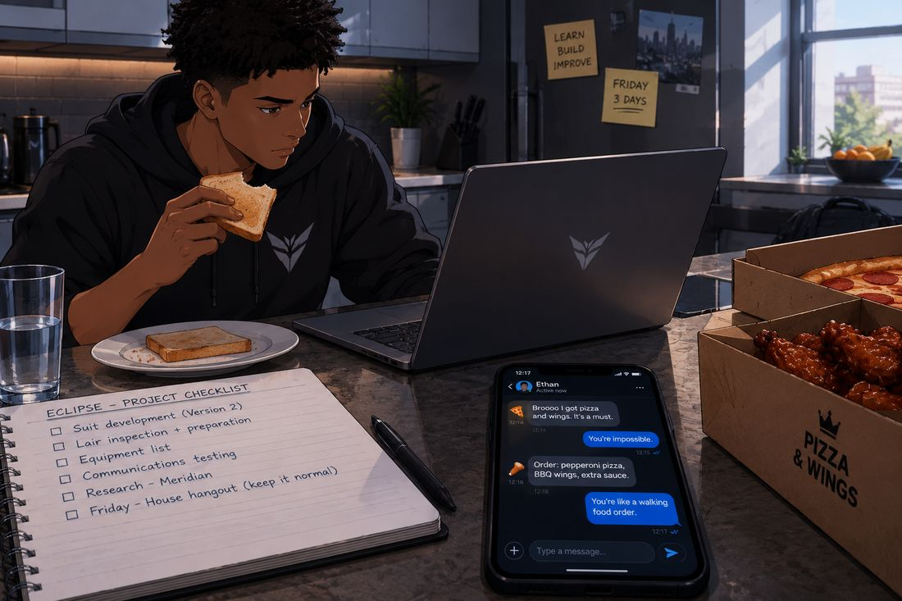
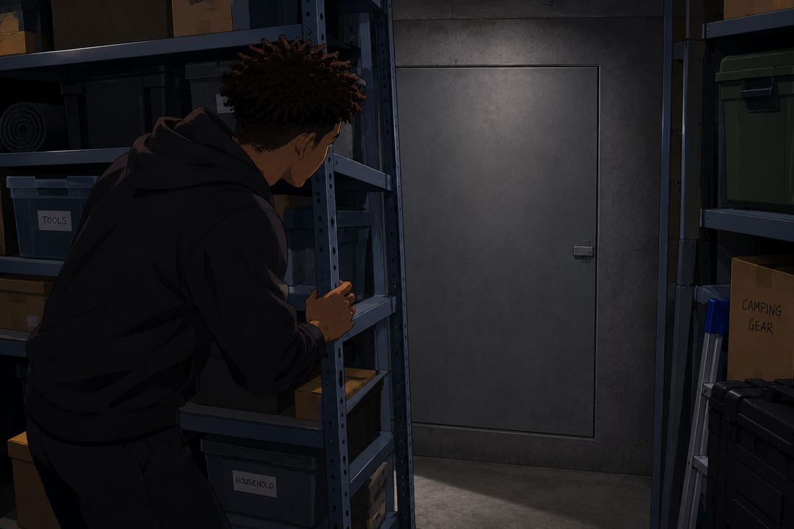
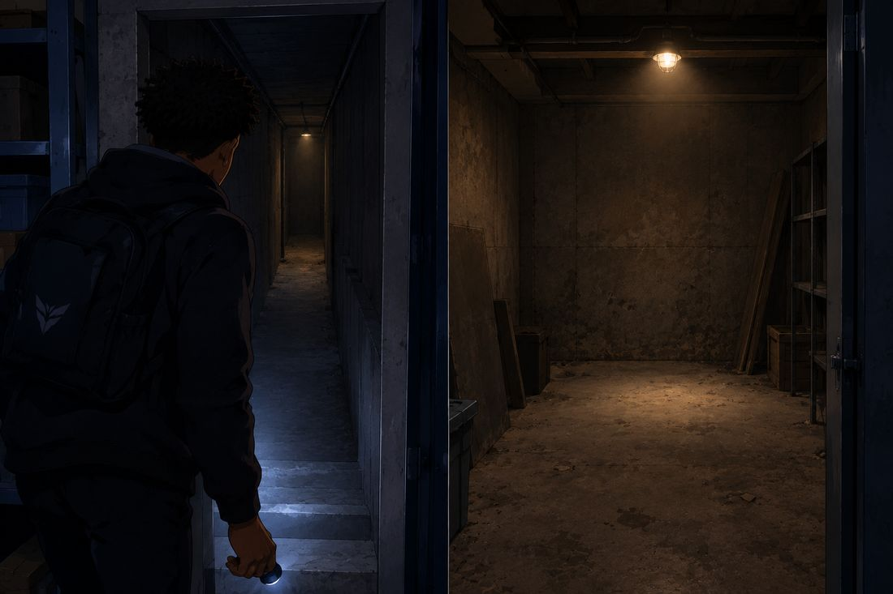
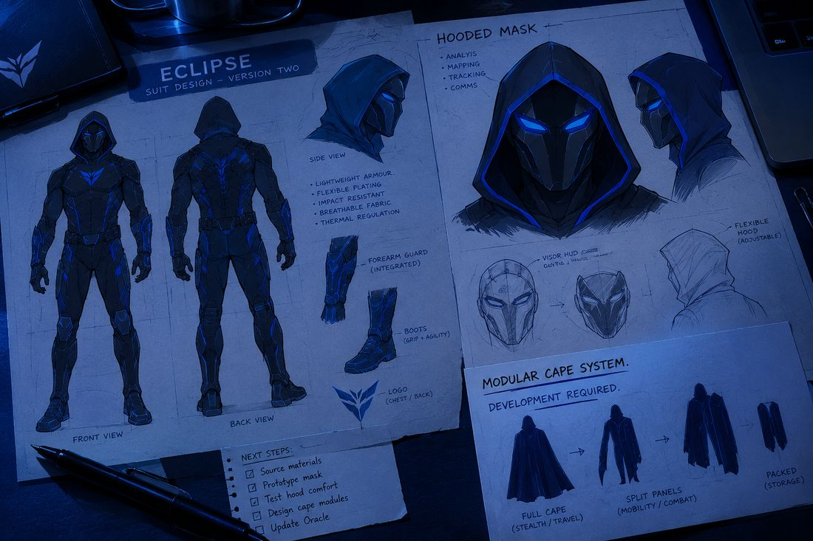
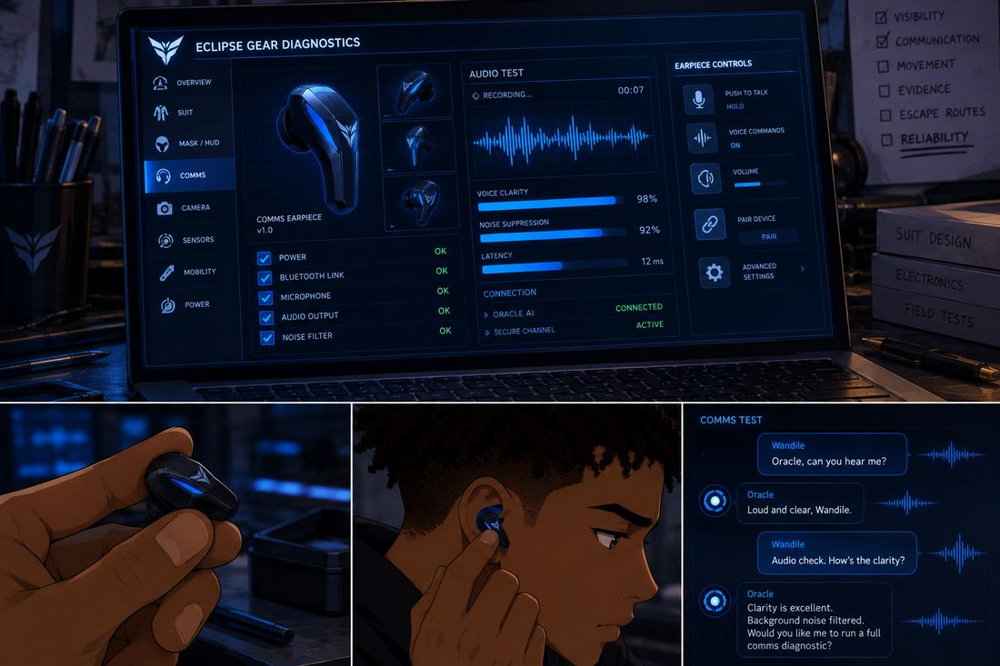

ECLIPSE
Volume 1 · Part 7 · Under Construction
Prologue
Version One
Morning light slides across Wandile’s desk and finds everything he would rather it didn’t: a notebook, three empty mugs, and the cracked forearm guard from the first night, lying where he left it like evidence.
The original black-and-blue suit hangs from the wardrobe door. His gloves, flashlight, camera, earpiece and phone are lined up beside the laptop in the neat little row he has started to think of as the arsenal. On the screen, the route he followed two nights ago still glows, a thin blue line threading through the dark.
He sits on the edge of his bed in socks, turning the guard over in his hands. The cracks catch the light. He flexes his arm and remembers the exact moment the gravel took his feet out from under him.

“Could’ve gone better,” he says.
“Your return home without being identified suggests the outing was not an unqualified failure,” says Oracle, from the laptop.
“That’s a very generous way of describing it.”
“I am attempting to remain objective.”
“Try being objective somewhere else.”
He sets the guard down and opens his notebook. The five headings are still there: VISIBILITY. COMMUNICATION. MOVEMENT. EVIDENCE. ESCAPE ROUTES. He looks at them for a moment, then adds a sixth, in capitals, and underlines it twice.
RELIABILITY.

Above the desk, the sketches are pinned in rows, and they are ambitious. A black-and-blue suit. An angular mask with a hood. Integrated communications, reinforced gauntlets, specialised boots, and a cape system that looks suspiciously like it belongs to a much bigger budget.
He glances at the real suit on the wardrobe door, then back at the drawings.
“That’s the goal,” he says. “Not what I’ve got right now.”
“Your proposed design requires substantial development.”
“I know.”
“Your projected timeline may be optimistic.”
“It’s Wednesday morning. Can we get through breakfast before you criticise my life choices?”
“I can delay the assessment.”
“Thank you.”
“For approximately thirty minutes.”
Wandile shakes his head. “You’ve barely been awake two days, and you’re already annoying.”
“Your feedback has been recorded.”
He stands, takes one last look at the sketches, and starts getting ready for university. Friday is two days away. A lot can be built in two days. A lot more cannot.
Chapter 1
Ordinary Business
Breakfast, in Wandile’s house, is a negotiation.
He is standing at the kitchen counter with a slice of toast in one hand and his university timetable in the other, while his laptop sits open beside the kettle, displaying a project checklist that has already grown two new pages overnight. On the fridge behind him, a yellow sticky note reads FRIDAY: 3 DAYS. It was true yesterday. He hasn’t updated it yet. Reality has.
“Your first lecture begins in forty minutes,” says Oracle.
“I’m aware.”
“Your breakfast is not yet prepared.”
“Also aware.”
A pause.
“Let me make breakfast.”
“Understood.”
His phone lights up with a message, and he already knows who it is.
Ethan: Broooo I got pizza and wings. It’s a must.
You’re impossible, Wandile types.
Order: pepperoni pizza, BBQ wings, extra sauce.
You’re like a walking food order.

Wandile laughs and puts the phone down. “Building a secret workspace might be easier than dealing with him.”
“That conclusion is not supported by sufficient evidence.”
“You’re supposed to be on my side.”
“I am on the side of accurate assessments.”
He grabs his backpack. “I’m beginning to regret naming you.”
“You selected the name yourself.”
“I know. That’s the worst part.”
Chapter 2
Promise?
The courtyard at Blackthorne University is busy in the way only a Wednesday can be: too early for the weekend to feel close, too late for anyone to pretend they are rested. Students drift between lectures in loose, caffeinated clumps.
Ethan walks beside Wandile with a takeaway coffee, and he takes a sip and grimaces like the cup has insulted his family.
“What’s wrong with it?” Wandile asks.
“I think the coffee has personal issues.”
“It’s coffee.”
“Then why does it taste like it knows my secrets?”
“Maybe it knows you haven’t studied.”
“Low blow.”
Ethan eyes Wandile’s backpack as they approach the lecture hall. “You carrying bricks in there?”
“Books.”
“Same thing.”
“You could try reading one.”
“And ruin my reputation?”
In the lecture hall, Wandile takes notes, answers a question when the lecturer calls on him, and gets it right. Whatever he does at night, he is not abandoning his education. His phone stays silent in the bottom of his bag, which is exactly where he needs it to stay.
At lunchtime, he and Ethan claim the usual table by the café window. Ethan has already started eating. Charlotte arrives with her notebook, and Olivia follows.
“You’re eating again?” Charlotte says.
“I had a demanding morning.”
“You attended one lecture.”
“Exactly. Academically exhausting.”
Olivia sits beside Charlotte and turns toward Wandile. “How’s your project going?”
He looks up from his drink. “It’s getting there.”
“That sounds suspiciously like a non-answer.”
“It’s a work in progress.”
“That’s just a longer non-answer,” says Charlotte.
“Let him have his mysterious little projects,” says Ethan. “We all need hobbies.”
“Your hobby is eating.”
“And I am very good at it.”
Everyone laughs. Olivia notices Wandile checking the time, and her smile flickers into something quieter.
“Are you busy later?”
“A few things to sort out at home.”
“You always have a few things to sort out.”
“It’s a gift.”
She nudges his cup across the table toward him. “Drink your coffee before it gets cold.”
“Yes, ma’am.”
Olivia rolls her eyes, smiling, and across the table Ethan watches the exchange with the expression of a man who has just found a new hobby.
“Interesting,” he says.
“What?” says Wandile.
“Nothing.”
“For once, I agree with Ethan,” says Charlotte. “Let’s keep it that way.”
“I didn’t even say anything!”
Afterwards, the four of them leave the café together into the afternoon light. Olivia checks her phone.
“Right. Friday. We’re still coming over to yours, aren’t we?”
“Yeah.”
“I’ve already started thinking about the food,” says Ethan.
“Of course you have,” says Charlotte.
“Someone has to protect the group’s interests.”
“Your interests.”
“I’m part of the group.”
“Unfortunately.”
Olivia laughs. “We’ll bring some things. Movies, takeaway, just hanging out.” She turns to Wandile, and her voice softens. “And you’re not allowed to disappear for half the evening to do work.”
Wandile hesitates for a fraction of a second. “I wasn’t planning to.”
“Good. I want you actually there with us.”
“I’ll be there.”
“Promise?”
He meets her eyes, and the word comes out before he has time to count the cost.
“Promise.”
They split up for their next classes. Wandile watches them go for a moment before heading the other way, and the promise sits in his chest, light and heavy at the same time.
Friday is coming. His friends are walking into his house, and they will be curious, and they will open things. He intends to give them a perfectly ordinary evening. That means the Eclipse project has to be completely separate from it.
He just has to work out how.
Chapter 3
The Wall That Wasn’t
Late in the afternoon, Wandile goes back down to the storage space he found on Monday, with his notebook and a measuring tape.
The single bulb flickers on. The room looks different from the way he left it, and that is entirely his doing. Last night, he spent an hour turning the cellar into the most boring room in the house: shelves straightened, boxes labelled TOOLS, HOUSEHOLD and CAMPING GEAR, the tarp folded away. It is the kind of room nobody has ever wanted to look at twice. The only thing spoiling the effect is the far corner, where the first suit sketch, the truck photograph and the chalk checklist are still pinned and scrawled where he put them. In daylight thinking, they look a lot more obvious than they did at night.
He frowns at them. This is a problem. Ethan would find that wall in approximately four seconds.
“Oracle,” he says, “remind me to take all of that down before Friday.”
“Reminder saved.”
This room, he is about to learn, was only ever the front half of the story.
He sets about measuring the space, working his way along the walls. At the back, where a tall set of metal shelving is crammed against the brickwork, his tape snags and he steps closer to free it. His knuckle knocks against the wall behind the shelves.
It sounds wrong.
He knocks again, lower down. A hollow, wooden sound answers him.
“That is not a wall,” he says quietly.
It takes him ten minutes to move the shelving without making a sound that would bring the neighbours running. Behind it, set into the wall and painted the same dull grey, is a flush metal panel with a small, easy-to-miss latch. The boxes on the shelves are labelled TOOLS, HOUSEHOLD and CAMPING GEAR, which is exactly how a very ordinary person, or a very careful one, would label them.

He checks the room behind him out of pure habit, as if someone might be watching. Then he opens it.
Beyond the panel, a narrow passage runs a few steps downward into a separate, enclosed room. He follows the beam of his flashlight down the steps, finds a switch, and a single caged bulb fills the space with a dusty yellow light. The walls and floor are rough and exposed. There is nothing in it. No equipment, no furniture, no secret computer humming in the corner. It isn’t a headquarters, ready and waiting. It is a sealed, forgotten room under a house that doesn’t know what it is hiding.

He stands in the middle of it with his notebook and tape measure, and he starts to see things that aren’t there yet.
“Workbench here,” he says. “Equipment storage along that wall. Computer station over there.”
“Your proposed layout leaves limited space near the access route,” says Oracle, in his earpiece.
“Then we change it.”
He measures the wall and writes down the dimensions.
“The room requires professional inspection before structural, electrical or renovation work.”
“Already on the list.”
He starts writing: Structural safety. Electrical assessment. Ventilation. Fire safety. Secure access. Concealed entrance. Then he stops, and the pen hangs above the page.
“Oracle.”
“Yes?”
“A professional inspector would walk straight into this room.”
“Correct.”
“Which defeats the entire point of a hidden room.”
“That is also correct.”
He rubs the back of his neck. It is the kind of problem that doesn’t show up on a sketch. “Then the storage space gets inspected, the ordinary one, the one nobody has to know anything about. And this room, I check myself, carefully, until I find someone who doesn’t need to know what it’s for.”
“That is a reasonable interim approach.”
“Thank you.”
He looks around the sealed room one more time. “It’s not much yet.”
“It is currently an unfinished concealed room.”
“Thank you for the inspiring assessment.”
“You are welcome.”
Wandile smiles, in spite of himself. He takes photographs and sketches a rough layout, keeping the access route clear.
“If this is going to work,” he says, “it has to be somewhere I can actually use. Not just a room full of equipment.”
“The workspace should support your equipment, research, communications, storage and maintenance needs.”
“Exactly. And nobody can know it’s here.”
He closes his notebook. The hidden room is a possibility, not yet a lair. It will need to be inspected, prepared and equipped, a little at a time. He switches off the bulb, closes the panel behind him, and slides the shelving back into place.
From the storage space, nothing looks different. Nothing at all.
Chapter 4
Mask, Guard, Gloves
That evening, he spreads the blueprints across his desk.
The long-term design shows the whole black-and-blue Eclipse suit: the angular mask with its hood, the integrated communications, the reinforced gauntlets, the specialised boots and the dramatic cape. Beside the cape sketch, in his own handwriting, a note reads: MODULAR CAPE SYSTEM. DEVELOPMENT REQUIRED.
He draws a line underneath it.

“Not until I know it works,” he says.
He turns to the page marked HOODED MASK. Four words run down its side: analysis, mapping, tracking, comms. The proposed interface sits inside the visor: navigation, low-light assistance, equipment warnings, communications, and the ability to review information he has already recorded.
“Your proposed system requires hardware and testing that you have not completed,” says Oracle.
“I know. No guessing. No untested features in the field.”
“That is a sensible limitation.”
“You sound surprised.”
“I am not equipped to experience surprise in the manner you imply.”
“Of course you aren’t.”
He picks up the cracked forearm guard. “It protected my arm, but it took damage. We need to understand what failed before changing the design.”
“I can organise your observations. I cannot determine the exact cause without sufficient information and appropriate testing.”
“Good. We don’t guess.”
He sketches a revised guard and adjusts the suit’s joints to keep his movement free. He adds notes about flexible protection, reinforced forearms, storage and footwear, and what the new mask should and shouldn’t do.
“Mobility first,” he says. “Protection second. Electronics only if they actually help.”
“The order may vary according to the intended application.”
“You know what I mean.”
“I do.”
He compares the original suit with the new design and lets himself smile.
“The final version is going to look incredible.”
“The final version does not yet exist.”
“You’re really committed to ruining my enthusiasm.”
“I am committed to accurate project documentation.”
He looks at the full design again. “Then let’s build it properly.”
Later that night, he sets up a basic test for the earpiece and the communications link. His laptop shows a diagnostic screen titled ECLIPSE GEAR DIAGNOSTICS, and he slips the earpiece in and checks the connection.

“Oracle, can you hear me?”
“Loud and clear, Wandile.”
“Audio check. How’s the clarity?”
“Clarity is excellent. Background noise filtered. Would you like me to run a full comms diagnostic?”
“Do it.”
“Diagnostic complete. Power, microphone, audio output and noise filter are functioning normally.”
He walks to the other side of the room and repeats it. The audio stays clear. He walks back and writes it down: COMMS. INITIAL TEST SUCCESSFUL. MORE TESTING REQUIRED.
“That’s one thing working,” he says.
“One successful test does not establish long-term reliability.”
“I know. We’ll test it again.”
He studies the mask sketch. “Next, we figure out the display.”
“That is a more complex development task.”
“I was afraid you’d say that.”
“Would you prefer a different vocal response?”
Wandile freezes. “You did not just reuse that line.”
“It remains applicable.”
“You’re learning sarcasm.”
“I am adapting to your conversational patterns.”
“That’s somehow more worrying.”
He shakes his head, amused, and goes back to work.
Chapter 5
What We Know
It is late when he finally opens his research files.
Shipping summaries, depot references, dates and photographs fill the laptop screen: everything from the first night and everything from before it. The records are incomplete, a puzzle with half the pieces still in the box.
“Let’s organise what we actually know,” he says.
“I can group the records by date, location and documented connection.”
“Separate confirmed information from assumptions.”
“Understood.”
The files slide into two columns on the screen.
“We still don’t know what’s in those crates.”
“Correct. The available evidence does not establish their contents.”
“Then we don’t pretend it does.”
He closes the file. His first outing gave him a lead, not the answers, and a lead is only useful if you don’t run past it.
“I need better information before I make another move.”
“That is consistent with your stated objectives.”
He leans back. “Sometimes I wish you’d just say, ’Good idea.’”
“Good idea.”
He looks at the laptop.
“That sounded completely insincere.”
“Your interpretation has been noted.”
He turns back to his notebook. The next move will need preparation. He can’t rely on improvisation forever.
Chapter 6
Adrian’s World
Across the city, in a tower that never seems to need the sun, Adrian stands at a glass wall with his hands in his pockets.
A woman in a dark suit enters with a tablet and an update, and stands at a respectful distance.
“The latest shipment has reached its transfer point. There are minor discrepancies in the depot documentation, but the logistics team is reviewing them.”
“Are the discrepancies affecting the schedule?”
“Not at present.”
“Then resolve them before the next report. I want the records accurate.”
“Understood.”
The woman leaves. Adrian returns to the documents on his desk, and his attention goes straight back to the machinery of Meridian. He has not connected Wandile to Eclipse. He is not investigating Wandile at all. The organisation runs the way it always has, smoothly and quietly.
Elsewhere in the building, however, a security analyst has started reviewing an incident at one of Meridian’s facilities.
Adrian has not received that report yet.
Chapter 7
Two Days
Just after midnight, Wandile is going over the next day’s schedule when his phone lights up.
Ethan: Quick poll. Sweet popcorn or salty?
It’s midnight, Wandile types.
Democracy never sleeps.
Wandile laughs. A message arrives in the group chat.
Charlotte: Ethan, go to sleep.
Ethan: I am making important weekend preparations.
Olivia: You mean choosing what to eat?
Ethan: Exactly.
Friday is two days away, Wandile writes. Please survive until then.
No promises.
He smiles at the screen. For a moment, his responsibilities feel lighter. Then he looks at the suit sketches beside his laptop.
“Two days,” he says.
“Until the scheduled gathering at your house, yes,” says Oracle.
“I need the equipment out of sight, the room sorted, and the suit ready for proper testing.”
“Those objectives may compete for your available time.”
“Then we’ll prioritise.”
“Both objectives may be achieved simultaneously.”
“You’ve been operational for two days.”
“Correct.”
“And somehow you’re still annoying.”
He closes the group chat and opens his project checklist. He wants Friday to feel normal for his friends. He also knows that turning sketches into working equipment is going to take more than one night.
Chapter 8
The Name
Somewhere else, in a dim office with no windows, a man sits at a desk.
It is the same room as the end of the last part, and the same man, and the folder on the desk still says ECLIPSE. Several monitors show depot footage, facility records and still images from the night Wandile first went out. The man opens a small evidence envelope. The label reads: RECOVERED ITEM. DEPOT PERIMETER.
Inside is a folded piece of paper.
He unfolds it. At the top, in handwriting that is not his, are the words:
ECLIPSE: FIELD NOTES.
He looks from the page to the surveillance footage, and what happened that night plays out in front of him like a slow, silent film.
At the depot, a figure in black and blue moves along a wall in the dark. His footing slips on loose gravel. He catches himself against the brickwork, steadies his balance, and carries on without looking back. He doesn’t notice what has fallen near the wall: a folded sheet of paper, a page of route notes that he scribbled a working title across before he left the house. It wasn’t meant to mean anything. It was a half-joke, written for nobody.
Later, during a routine perimeter check, a depot employee spots the paper, picks it up, notices the handwritten heading and passes it to security along with the rest of the incident details.
Back in the dim office, the man lays the recovered page beside a still image of the masked figure. He studies them both.
“Eclipse,” he says.
He enlarges the image. The figure’s face stays hidden behind the mask. The paper gives him a name to use, and nothing else: no civilian identity, no address, no face.
He types into the file:
SUBJECT: ECLIPSE. IDENTITY: UNKNOWN. ASSOCIATED INCIDENT: MERIDIAN DEPOT. STATUS: UNDER REVIEW.
He pauses the footage on the distant black-and-blue figure.
“Let’s find out what you were doing there.”
He saves the file. He works for Meridian’s own security and intelligence division, and he is not one of the shadowy figures from the earlier investigation. He hasn’t reported any of this to Adrian yet.
The screen fills with the ECLIPSE file, and then it goes dark.
Final Page
Version Two
Thursday morning slides through the blinds in thin gold stripes.
Wandile reviews his notes before leaving for university. The cracked forearm guard sits beside his original suit. The new mask design is pinned to the wall, and a floor plan of the hidden room lies next to his notebook, covered in measurements, arrows and question marks.
Nothing is finished. But the plan is clearer than it was yesterday.
He adds three lines to his checklist: Work out a safe way to inspect the room. Continue suit and mask development. Test communications again.
He looks at the full design. “One step at a time.”
“That approach may improve the likelihood of completing the project successfully,” says Oracle.
“You could just agree with me.”
“I have done so repeatedly.”
“And yet you make it sound like a performance review.”
“Would you like me to record that as your official assessment?”
Wandile stops. He turns slowly toward the laptop.
“You’re doing callbacks now.”
“It seemed appropriate.”
“That was actually good.”
“Thank you.”
“Don’t let it go to your head.”
“I do not possess a head.”
He grabs his backpack. “And somehow, that’s still the most annoying thing about you.”
He leaves for university. The door clicks shut. The room is quiet.
The desk stays in frame: the full black-and-blue Eclipse design spread across the paper, the angular mask and its hood, the reinforced gauntlets, the boots, the cape that doesn’t exist yet. At the bottom of the page, in his handwriting, he has written:
ECLIPSE: VERSION TWO.
The design is ambitious. The work has only begun.
And tomorrow, he has a house full of friends, one working earpiece, a hidden room nobody knows about, and a promise to actually be there.